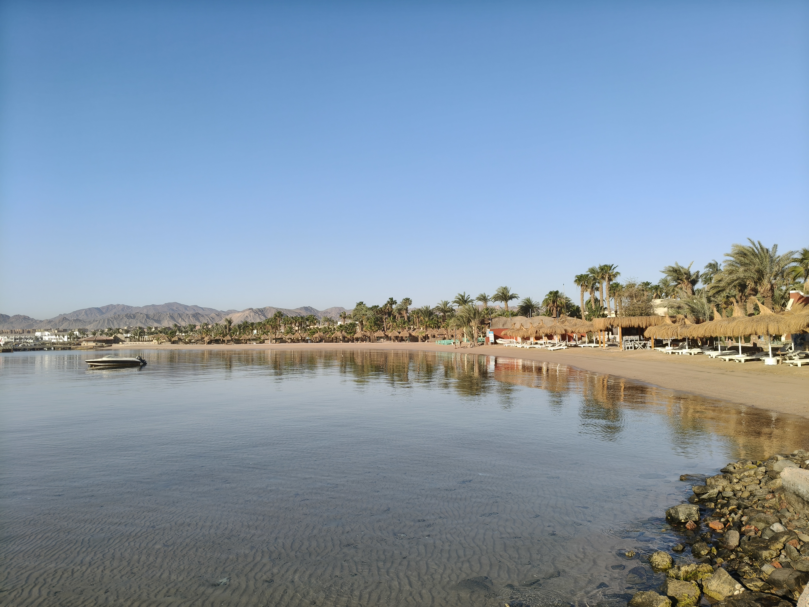

★ Notre choix
Somabay — La Presqu'île Secrète
Somabay est une presqu'île sur la côte de la Mer Rouge, 45 km au sud de Hurghada. Moins fréquentée que les grandes stations balnéaires, elle offre un cadre préservé avec plusieurs resorts haut de gamme. L'avantage : des coraux accessibles à la nage depuis la plage (pas besoin de bateau). L'eau est cristalline, la faune marine généreuse. C'est ici que finit notre voyage — et il ne pouvait pas finir mieux.